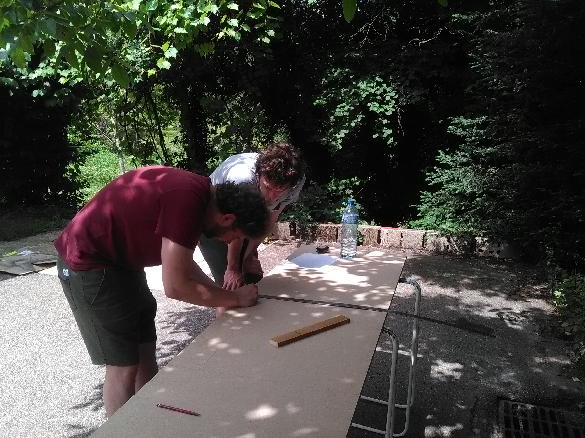

Borne d'arcade
Participants
- Clément Bellanger
- Florian Delconte
- Victor Haguenauer
Début du Projet
Lors des vacances scolaire de 2017, l’idée de constuire une borne d’arcade nous traversa l’esprit. Cette idée, contrairement à beaucoup d’autres, va nous entrainer dans les méandres d’un projet riche en expériences. Pour ma part, mes connaissances en bricolage étaient proche du néant et je connaissais peut être deux ou trois bricoles en électronique. Néanmoins je connaissais déjà linux.
Matériel utilisé
- Une raspberry pi 3
- Un set de boutons et de pads Xin-Mo
- Téléviseur Tokai de seconde main
Première tentative
Après l’achat de la télévision d’occasion et des sets de boutons Xin-Mo nous décidons d’entreprendre directement la planche ou sera mise les boutons.
Un meilleur plan…
Après avoir fait la planche, Victor nous annonce qu’un plan d’une borne d’arcade déjà réalisé est disponible ainsi que tous le design graphique des stickers. Nous décidons de suivre ce plan, plus rigoureux que ce que l’on pouvait faire à ce moment là. On décide donc de refaire la planche avec les boutons.
Suite et fin en images
La plupart des modifs suivantes suivent le plan hormis la décision de couper la borne en deux pour mieux la transporter et l’utilisation d’une raspberry pi 3 en interne.
